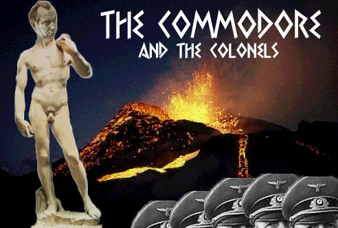
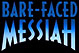

© John Forte 1980. May not be archived in the UK.
Appendix. Hubbard's Manifesto for Corfu
"Over the side go the erring Scientologists" -
Sunday Times, 17 November 1969
Further reading:
 |
Chapter 17 of Bare-Faced Messiah, |
Last updated 12 January 1997
by Chris Owen (co@nvg.unit.no)